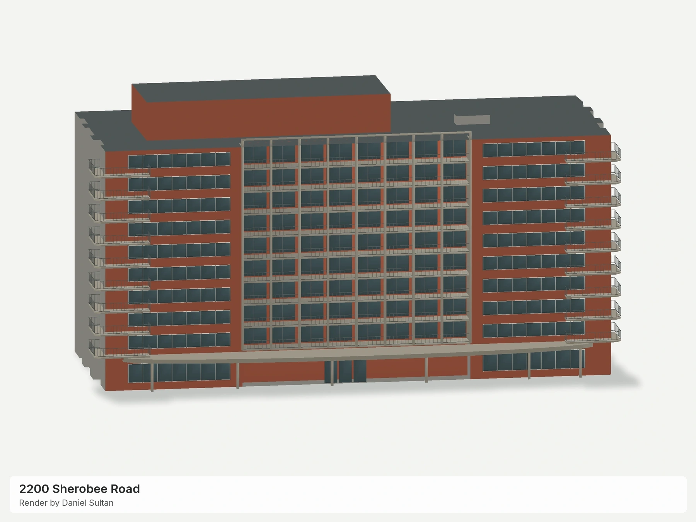

Sherobee Road and Churchill Meadows
Shared exterior references improved the Sherobee study. Churchill Meadows gained a wider scene.

From reference to street
I compared the old and revised Sherobee exteriors and placed the Winding Trail and 228 Queen Street South studies in their city surroundings. The update also added a detailed Churchill Meadows view.
Churchill Meadows and two building studies
Churchill Meadows now has its own detailed view. The Winding Trail and 228 Queen Street South studies also appear in their surroundings, with some ground details still approximate.
New reference renders
Shared references helped me improve Winding Trail, Paisley, Sherobee, museum buildings, Leslie Log House and 228 Queen Street South, and make new studies of Port Credit Lighthouse and part of Conference at the Council House. The new page shows matched views of earlier and updated models, alongside the details I still need to check.
The earlier October 17 release added these standalone render studies. This later update places Winding Trail and 228 Queen Street South in the city map and adds the Churchill Meadows view. The existing gallery pictures and downloadable atlas have not been regenerated.